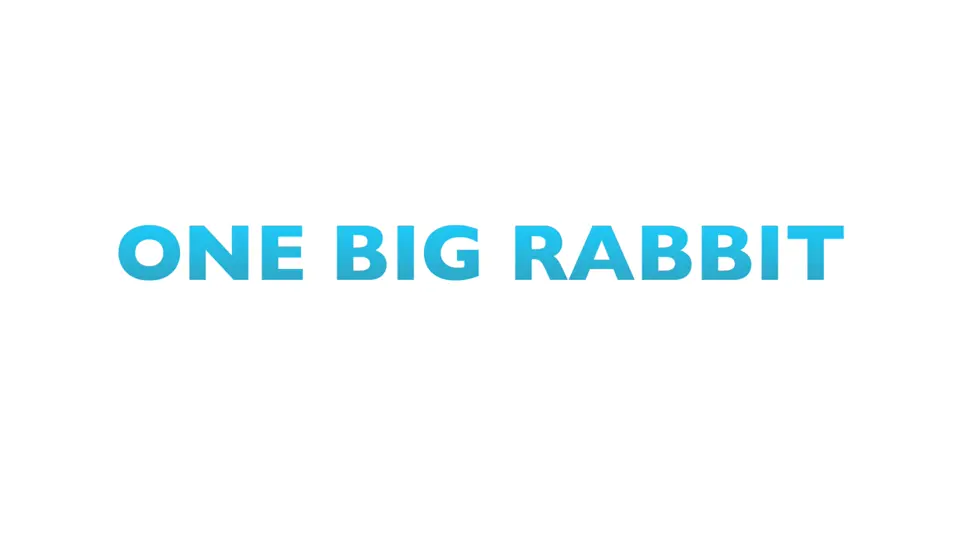

Frame LensMCP server · free · local
Video your agent can measure



● cut 9.08 s, frame 22712 shots, 11 cuts25 fpsa palette per shot
npx -y framelens initCuts · easing · colour · beats → HyperFrames, Remotion, CSS, AE, Lottie